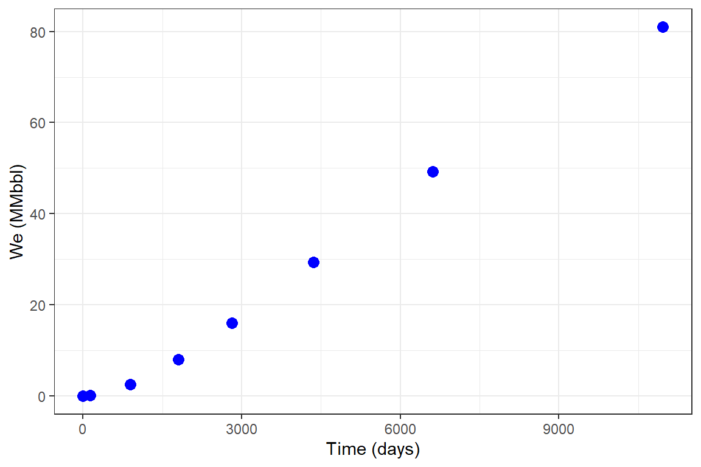
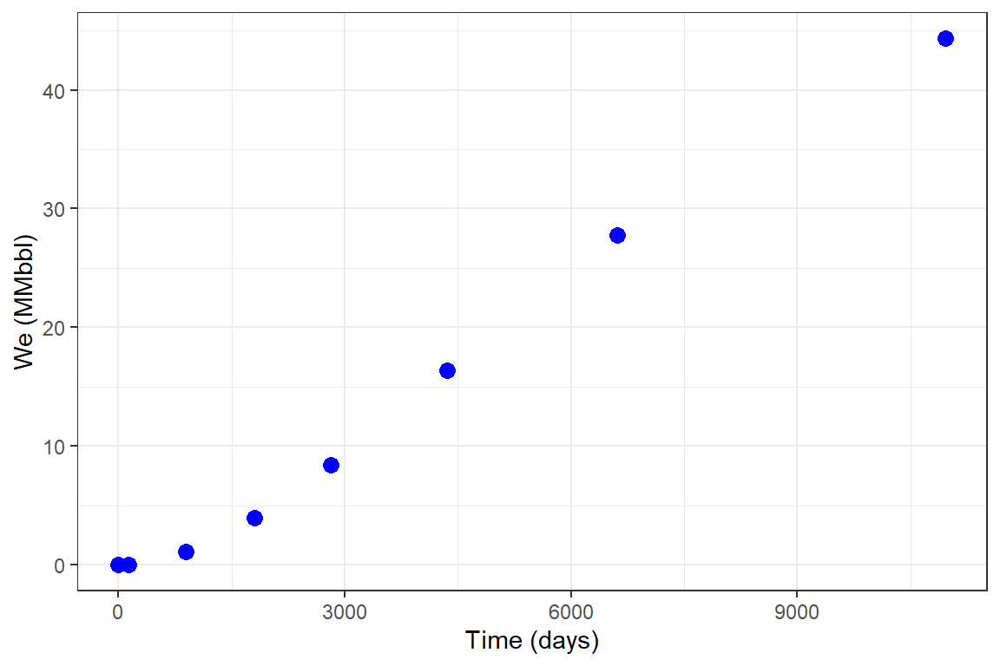
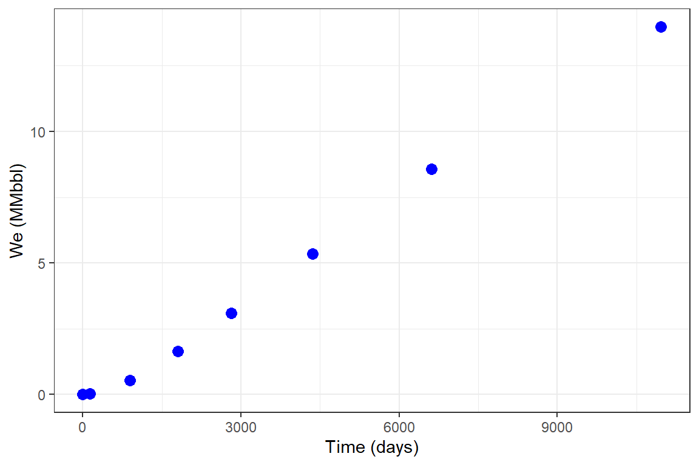
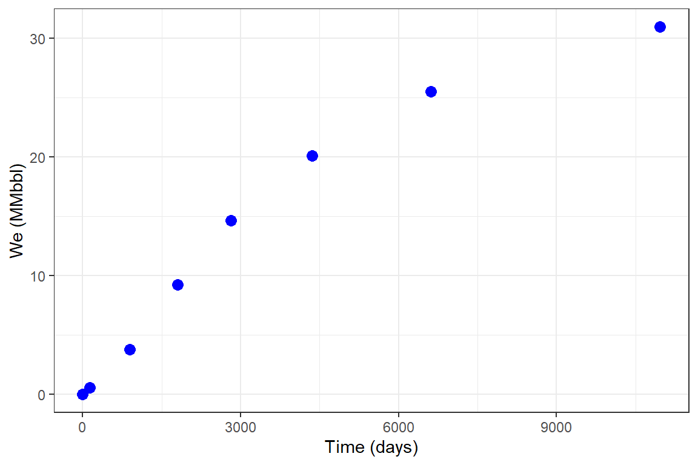
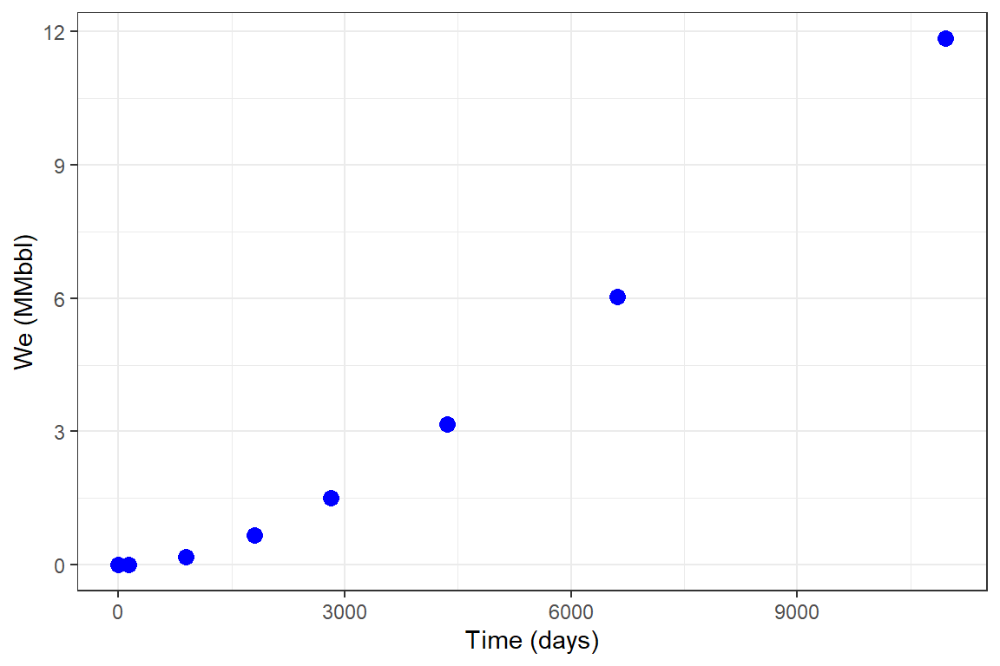
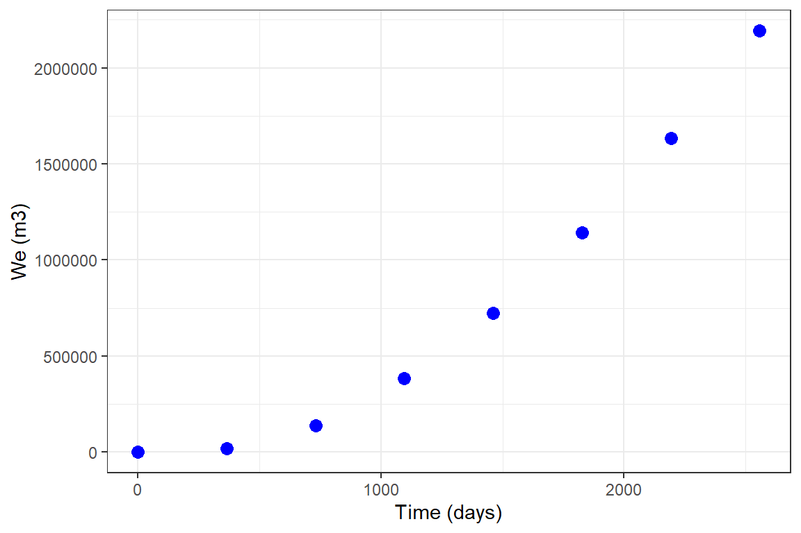
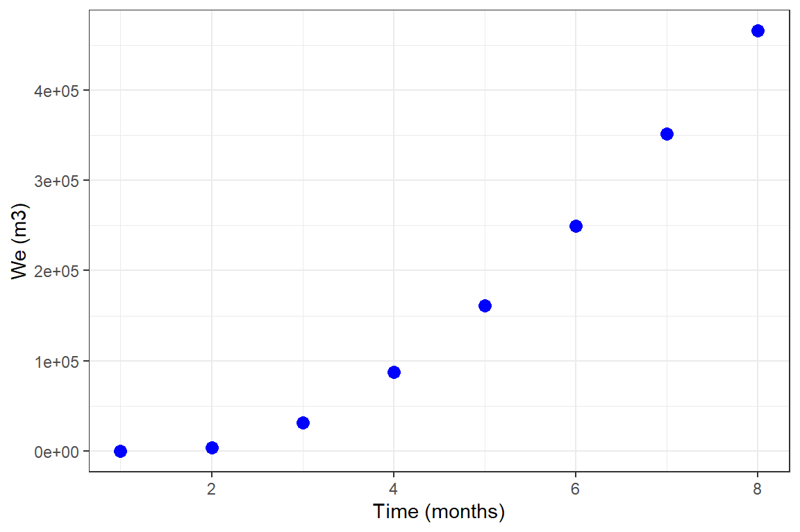

Raquifer.RmdRaquifer
Raquifer estimates the cumulative water influx into hydrocarbon reservoirs using un-steady and pseudo-steady state modeling approaches. It generates a data frame of cumulative water influx over time for edge-drive and bottom-drive aquifers. Van Everdingen and Hurst un-steady state model for the constant terminal pressure solution predicts the cumulative influx for edge-water drive aquifers with radial flow (Van Everdingen & Hurst, 1949). For the bottom-water drive aquifers with linear/radial flow, the Yildiz-Khosravi un-steady state model for the constant terminal pressure solution is used (Yildiz & Khosravi, 2007). Nabor and Barham linear flow model for the constant terminal pressure solution is used for the edge-water and bottom-water drive aquifers modeling(Nabor & Barham, 1964). For the linear and radial pseudo-steady state flow modeling in aquifers, the Fetkovich method is used (Fetkovich, 1971).
Cumulative water influx predictions are generated by three different functions: aquifer_param(), aquifer_time(), and aquifer_predict().
aquifer_param() arguments
input_unit: A unit system for parameters, a character string either ‘SI’ or ‘Field’output_unit: A unit system for properties, a character string either ‘SI’ or ‘Field’param model: State of flow in the aquifer, a character string either ‘uss’ for the un-steady state flow or ‘pss’ for the pseudo-steady state flowflow_type: A character string either ‘radial’ or ‘linear’water_drive: A character string either ‘edge’ or ‘bottom’phi: Aquifer porosity, a numeric fractionperm_h: Aquifer horizontal permeability in ‘md’ in both ‘SI’ and ‘Field’ input unit systems. A NULL value must be used for the combination of ‘uss’, ‘linear’, and ‘bottom’ flowperm_v: Aquifer vertical permeability in ‘md’ in both ‘SI’ and ‘Field’ input unit systems. A NULL value must be used for the combination of ‘uss’, ‘linear’, ‘edge’ flow. A NULL value must be used for the combination of ‘uss’, ‘radial’, ‘edge’ flow. A NULL value must be used for the combination of ‘pss’, ‘radial’, ‘edge’ flow.h_a: Aquifer` height in ‘m’ or ‘ft’ in ‘SI’ and ‘Field’ input unit systems, respectively.r_a: Aquifer radius in ‘m’ or ‘ft’ in ‘SI’ and ‘Field’ input unit systems, respectively. A NULL value must be used for the combination of ‘uss’, ‘linear’, ‘edge’ flow. A NULL value must be used for the combination of ‘uss’, ‘linear’, ‘bottom’ flow.r_R: Reservoir radius in ‘m’ or ‘ft’ in ‘SI’ and ‘Field’ input unit systems, respectively. A NULL value must be used for the combination of ‘uss’, ‘linear’, ‘edge’ flow. A NULL value must be used for the combination of ‘uss’, ‘linear’, ‘bottom’ flow.w_a: Aquifer width in ‘m’ or ‘ft’ in ‘SI’ and ‘Field’ input unit systems, respectively. A NULL value must be used for the combination of ‘uss’, ‘radial’, ‘edge’ flow. A NULL value must be used for the combination of ‘uss’, ‘radial’, ‘bottom’ flow. A NULL value must be used for the combination of ‘pss’, ‘radial’, ‘edge’ flow.l_a: Aquifer length in ‘m’ or ‘ft’ in ‘SI’ and ‘Field’ input unit systems, respectively. A NULL value must be used for the combination of ‘uss’, ‘radial’, ‘edge’ flow. A NULL value must be used for the combination of ‘uss’, ‘radial’, ‘bottom’ flow. A NULL value must be used for the combination of ‘pss’, ‘radial’, ‘edge’ flow.tetha: Fraction of reservoir encircled by the aquifer, reported in “degrees” in both ‘SI’ and ‘Field’ input unit systems. A NULL value must be used for the combination of ‘uss’, ‘radial’, ‘bottom’ flow. A NULL value must be used for the combination of ‘uss’, ‘linear’, ‘edge’ flow. A NULL value must be used for the combination of ‘uss’, ‘linear’, ‘bottom’ flow.mu_water: Water viscosity in ‘mPa.s’ or ‘cp’ in ‘SI’ and ‘Field’ input unit systems, respectivelyc_water: Water compressibility in ‘1/kPa’ or ‘1/psi’ in ‘SI’ and ‘Field’ input unit systems, respectivelyc_rock: Rock compressibility in ‘1/kPa’ or ‘1/psi’ in ‘SI’ and ‘Field’ input unit systems, respectivelypressure: A numeric vector of pressure data at the boundary of reservoir/aquifer. Must have the same length as the ‘aquifer_time()’ objectaquifer_time() arguments
x: A vector or sequence of times/dates.unit: A unit system for input vector x.aquifer_predict() arguments
aquifer_lst: A list object of class ‘decline’.time_lst: A list object of class ‘time’Examples
Example 1: Un-steady state radial flow, edge-water drive
library(Raquifer) library(ggplot2) library(magrittr) aqu_time <- aquifer_time(x = c(0,0.368,2.439,4.957,7.732,11.926,18.126,30.044) * 365, unit = "day") parameters <- aquifer_param(input_unit = "Field", output_unit = "Field", model = "uss", flow_type = "radial", water_drive = "edge", phi = 0.27, perm_h = 64.2, h_a = 20, r_a = 5 * 14892, r_R = 14892, tetha = 180, mu_water = 0.485, c_water = 3.88e-6, c_rock = 2e-6, pressure = c(1640,1600,1400,1200,1000,800,600,400)) aqu_time #> $t #> [1] 0.000 134.320 890.235 1809.305 2822.180 4352.990 6615.990 #> [8] 10966.060 #> #> $unit #> [1] "day" #> #> $reference_date #> [1] "2020-05-10" #> #> attr(,"class") #> [1] "day" "time" parameters #> $input_unit #> [1] "Field" #> #> $output_unit #> [1] "Field" #> #> $model #> [1] "veh_rad_edge" #> #> $phi #> [1] 0.27 #> #> $perm_h #> [1] 64.2 #> #> $h_a #> [1] 20 #> #> $r_a #> [1] 74460 #> #> $r_R #> [1] 14892 #> #> $tetha #> [1] 180 #> #> $mu_water #> [1] 0.485 #> #> $c_water #> [1] 3.88e-06 #> #> $c_rock #> [1] 2e-06 #> #> $pressure #> [1] 1640 1600 1400 1200 1000 800 600 400 #> #> attr(,"class") #> [1] "veh_rad_edge" "aquifer" pred_veh <- aquifer_predict(aquifer_lst = parameters, time_lst = aqu_time) head(pred_veh) #> Date Time (days) We (MMbbl) #> 1 2020-05-10 0.000 0.00000000 #> 2 2020-09-21 134.320 0.06185335 #> 3 2022-10-17 890.235 1.27831951 #> 4 2025-04-23 1809.305 4.19222802 #> 5 2028-01-31 2822.180 8.46586625 #> 6 2032-04-09 4352.990 15.65627937 pred_veh %>% ggplot(aes(x = `Time (days)`, y = `We (MMbbl)`)) + geom_point(size = 3, color = "blue") + theme_bw()
Example 2: Un-steady state radial flow, bottom-water drive
library(Raquifer) library(ggplot2) library(magrittr) aqu_time <- aquifer_time(x = c(0,0.368,2.439,4.957,7.732,11.926,18.126,30.044) * 365, unit = "day") parameters <- aquifer_param(input_unit = "Field", output_unit = "Field", model = "uss", flow_type = "radial", water_drive = "bottom", phi = 0.27, perm_h = 64.2, perm_v = 64.2, h_a = 20, r_a = 5 * 14892, r_R = 14892, mu_water = 0.485, c_water = 3.88e-6, c_rock = 2e-6, pressure = c(1640,1600,1400,1200,1000,800,600,400)) pred_ykh <- aquifer_predict(aquifer_lst = parameters, time_lst = aqu_time) head(pred_ykh) #> Date Time (days) We (MMbbl) #> 1 2020-05-10 0.000 0.0000000 #> 2 2020-09-21 134.320 0.1600501 #> 3 2022-10-17 890.235 2.5380986 #> 4 2025-04-23 1809.305 8.0646132 #> 5 2028-01-31 2822.180 16.0265710 #> 6 2032-04-09 4352.990 29.3508862 pred_ykh %>% ggplot(aes(x = `Time (days)`, y = `We (MMbbl)`)) + geom_point(size = 3, color = "blue") + theme_bw()

Example 3: Pseudo-steady state radial flow, edge-water drive
library(Raquifer) library(ggplot2) library(magrittr) aqu_time <- aquifer_time(x = c(0,0.368,2.439,4.957,7.732,11.926,18.126,30.044) * 365, unit = "day") parameters <- aquifer_param(input_unit = "Field", output_unit = "Field", model = "pss", flow_type = "radial", water_drive = "edge", phi = 0.27, perm_h = 64.2, h_a = 20, r_a = 5 * 14892, r_R = 14892, tetha = 180, mu_water = 0.485, c_water = 3.88e-6, c_rock = 2e-6, pressure = c(1640,1600,1400,1200,1000,800,600,400)) pred_fetk <- aquifer_predict(aquifer_lst = parameters, time_lst = aqu_time) head(pred_fetk) #> Date Time (days) We (MMbbl) #> 1 2020-05-10 0.000 0.00000000 #> 2 2020-09-21 134.320 0.02884514 #> 3 2022-10-17 890.235 1.08324703 #> 4 2025-04-23 1809.305 3.94690549 #> 5 2028-01-31 2822.180 8.44348341 #> 6 2032-04-09 4352.990 16.33925334 pred_fetk %>% ggplot(aes(x = `Time (days)`, y = `We (MMbbl)`)) + geom_point(size = 3, color = "blue") + theme_bw()

Example 4: Un-steady state linear flow, edge-water drive
library(Raquifer) library(ggplot2) library(magrittr) aqu_time <- aquifer_time(x = c(0,0.368,2.439,4.957,7.732,11.926,18.126,30.044) * 365, unit = "day") parameters <- aquifer_param(input_unit = "Field", output_unit = "Field", model = "uss", flow_type = "linear", water_drive = "edge", phi = 0.27, perm_h = 64.2, h_a = 20, w_a = 29784, l_a = 161145, mu_water = 0.485, c_water = 3.88e-6, c_rock = 2e-6, pressure = c(1640,1600,1400,1200,1000,800,600,400)) pred_nb_01 <- aquifer_predict(aquifer_lst = parameters, time_lst = aqu_time) head(pred_nb_01) #> Date Time (days) We (MMbbl) #> 1 2020-05-10 0.000 0.00000000 #> 2 2020-09-21 134.320 0.03199772 #> 3 2022-10-17 890.235 0.53782163 #> 4 2025-04-23 1809.305 1.63239439 #> 5 2028-01-31 2822.180 3.09768169 #> 6 2032-04-09 4352.990 5.35540873 pred_nb_01 %>% ggplot(aes(x = `Time (days)`, y = `We (MMbbl)`)) + geom_point(size = 3, color = "blue") + theme_bw()

Example 5: Un-steady state linear flow, bottom-water drive
library(Raquifer) library(ggplot2) library(magrittr) aqu_time <- aquifer_time(x = c(0,0.368,2.439,4.957,7.732,11.926,18.126,30.044) * 365, unit = "day") parameters <- aquifer_param(input_unit = "Field", output_unit = "Field", model = "uss", flow_type = "linear", water_drive = "bottom", phi = 0.27, perm_v = 64.2, h_a = 20, w_a = 29784, l_a = 161145, mu_water = 0.485, c_water = 3.88e-6, c_rock = 2e-6, pressure = c(1640,1600,1400,1200,1000,800,600,400)) pred_nb_02 <- aquifer_predict(aquifer_lst = parameters, time_lst = aqu_time) head(pred_nb_02) #> Date Time (days) We (MMbbl) #> 1 2020-05-10 0.000 0.0000000 #> 2 2020-09-21 134.320 0.5428142 #> 3 2022-10-17 890.235 3.7996992 #> 4 2025-04-23 1809.305 9.2278409 #> 5 2028-01-31 2822.180 14.6559827 #> 6 2032-04-09 4352.990 20.0841244 pred_nb_02 %>% ggplot(aes(x = `Time (days)`, y = `We (MMbbl)`)) + geom_point(size = 3, color = "blue") + theme_bw()

Example 6: Pseudo-steady state linear flow, edge-water drive
library(Raquifer) library(ggplot2) library(magrittr) aqu_time <- aquifer_time(x = c(0,0.368,2.439,4.957,7.732,11.926,18.126,30.044) * 365, unit = "day") parameters <- aquifer_param(input_unit = "Field", output_unit = "Field", model = "pss", flow_type = "linear", water_drive = "edge", phi = 0.27, perm_h = 64.2, h_a = 20, w_a = 29784, l_a = 161145, mu_water = 0.485, c_water = 3.88e-6, c_rock = 2e-6, pressure = c(1640,1600,1400,1200,1000,800,600,400)) parameters #> $input_unit #> [1] "Field" #> #> $output_unit #> [1] "Field" #> #> $model #> [1] "fetk_lin_edge" #> #> $phi #> [1] 0.27 #> #> $perm_h #> [1] 64.2 #> #> $h_a #> [1] 20 #> #> $w_a #> [1] 29784 #> #> $l_a #> [1] 161145 #> #> $mu_water #> [1] 0.485 #> #> $c_water #> [1] 3.88e-06 #> #> $c_rock #> [1] 2e-06 #> #> $pressure #> [1] 1640 1600 1400 1200 1000 800 600 400 #> #> attr(,"class") #> [1] "fetk_lin_edge" "aquifer" pred_fetk_02 <- aquifer_predict(aquifer_lst = parameters, time_lst = aqu_time) head(pred_fetk_02) #> Date Time (days) We (MMbbl) #> 1 2020-05-10 0.000 0.000000000 #> 2 2020-09-21 134.320 0.004426176 #> 3 2022-10-17 890.235 0.175334148 #> 4 2025-04-23 1809.305 0.668533598 #> 5 2028-01-31 2822.180 1.506005132 #> 6 2032-04-09 4352.990 3.161133684 pred_fetk_02 %>% ggplot(aes(x = `Time (days)`, y = `We (MMbbl)`)) + geom_point(size = 3, color = "blue") + theme_bw()

Example 7: Pseudo-steady state linear flow, bottom-water drive
library(Raquifer) library(ggplot2) library(magrittr) aqu_time <- aquifer_time(x = c(0,0.368,2.439,4.957,7.732,11.926,18.126,30.044) * 365, unit = "day") parameters <- aquifer_param(input_unit = "Field", output_unit = "Field", model = "pss", flow_type = "linear", water_drive = "bottom", phi = 0.27, perm_v = 64.2, h_a = 20, w_a = 29784, l_a = 161145, mu_water = 0.485, c_water = 3.88e-6, c_rock = 2e-6, pressure = c(1640,1600,1400,1200,1000,800,600,400)) pred_fetk_03 <- aquifer_predict(aquifer_lst = parameters, time_lst = aqu_time) head(pred_fetk_03) #> Date Time (days) We (MMbbl) #> 1 2020-05-10 0.000 0.0000000 #> 2 2020-09-21 134.320 0.5428142 #> 3 2022-10-17 890.235 3.7996992 #> 4 2025-04-23 1809.305 9.2278409 #> 5 2028-01-31 2822.180 14.6559827 #> 6 2032-04-09 4352.990 20.0841244 pred_fetk_03 %>% ggplot(aes(x = `Time (days)`, y = `We (MMbbl)`)) + geom_point(size = 3, color = "blue") + theme_bw()
Example 8: Un-steady state radial flow, edge-water drive
library(Raquifer) library(ggplot2) library(magrittr) aqu_time <- aquifer_time(x = seq(as.Date("2020/1/1"), by = "year", length.out = 8), unit = "date") parameters <- aquifer_param(input_unit = "Field", output_unit = "SI", model = "uss", flow_type = "radial", water_drive = "edge", phi = 0.27, perm_h = 64.2, h_a = 20, r_a = 5 * 14892, r_R = 14892, tetha = 180, mu_water = 0.485, c_water = 3.88e-6, c_rock = 2e-6, pressure = c(1640,1600,1400,1200,1000,800,600,400)) aqu_time #> $t #> [1] 0 366 731 1096 1461 1827 2192 2557 #> #> $unit #> [1] "date" #> #> $reference_date #> [1] "2020-01-01" #> #> attr(,"class") #> [1] "day" "time" parameters #> $input_unit #> [1] "Field" #> #> $output_unit #> [1] "SI" #> #> $model #> [1] "veh_rad_edge" #> #> $phi #> [1] 0.27 #> #> $perm_h #> [1] 64.2 #> #> $h_a #> [1] 20 #> #> $r_a #> [1] 74460 #> #> $r_R #> [1] 14892 #> #> $tetha #> [1] 180 #> #> $mu_water #> [1] 0.485 #> #> $c_water #> [1] 3.88e-06 #> #> $c_rock #> [1] 2e-06 #> #> $pressure #> [1] 1640 1600 1400 1200 1000 800 600 400 #> #> attr(,"class") #> [1] "veh_rad_edge" "aquifer" pred_veh <- aquifer_predict(aquifer_lst = parameters, time_lst = aqu_time) head(pred_veh) #> Date Time (days) We (m3) #> 1 2020-01-01 0 0.0 #> 2 2021-01-01 366 18021.0 #> 3 2022-01-01 731 135900.7 #> 4 2023-01-01 1096 383984.4 #> 5 2024-01-01 1461 722190.1 #> 6 2025-01-01 1827 1141218.1 pred_veh %>% ggplot(aes(x = `Time (days)`, y = `We (m3)`)) + geom_point(size = 3, color = "blue") + theme_bw()

Example 8: Un-steady state radial flow, edge-water drive
library(Raquifer) library(ggplot2) library(magrittr) aqu_time <- aquifer_time(x = 1:8, unit = "month") parameters <- aquifer_param(input_unit = "Field", output_unit = "SI", model = "uss", flow_type = "radial", water_drive = "edge", phi = 0.27, perm_h = 64.2, h_a = 20, r_a = 5 * 14892, r_R = 14892, tetha = 180, mu_water = 0.485, c_water = 3.88e-6, c_rock = 2e-6, pressure = c(1640,1600,1400,1200,1000,800,600,400)) aqu_time #> $t #> [1] 1 2 3 4 5 6 7 8 #> #> $unit #> [1] "month" #> #> $reference_date #> [1] "2020-05-10" #> #> attr(,"class") #> [1] "month" "time" parameters #> $input_unit #> [1] "Field" #> #> $output_unit #> [1] "SI" #> #> $model #> [1] "veh_rad_edge" #> #> $phi #> [1] 0.27 #> #> $perm_h #> [1] 64.2 #> #> $h_a #> [1] 20 #> #> $r_a #> [1] 74460 #> #> $r_R #> [1] 14892 #> #> $tetha #> [1] 180 #> #> $mu_water #> [1] 0.485 #> #> $c_water #> [1] 3.88e-06 #> #> $c_rock #> [1] 2e-06 #> #> $pressure #> [1] 1640 1600 1400 1200 1000 800 600 400 #> #> attr(,"class") #> [1] "veh_rad_edge" "aquifer" pred_veh <- aquifer_predict(aquifer_lst = parameters, time_lst = aqu_time) head(pred_veh) #> Date Time (months) We (m3) #> 1 2020-06-09 1 0.000 #> 2 2020-07-09 2 4236.423 #> 3 2020-08-09 3 31650.466 #> 4 2020-09-08 4 87609.327 #> 5 2020-10-09 5 161084.687 #> 6 2020-11-08 6 249479.619 pred_veh %>% ggplot(aes(x = `Time (months)`, y = `We (m3)`)) + geom_point(size = 3, color = "blue") + theme_bw()

References
Fetkovich, M. J. (1971). A Simplified Approach to Water Influx Calculations-Finite Aquifer Systems. Journal of Petroleum Technology, 23(07), 814–828. https://doi.org/10.2118/2603-PA
Nabor, G. W., & Barham, R. H. (1964). Linear Aquifer Behavior. Journal of Petroleum Technology, 16(05), 561–563. https://doi.org/10.2118/791-PA
Van Everdingen, A. F., & Hurst, W. (1949). The Application of the Laplace Transformation to Flow Problems in Reservoirs. Journal of Petroleum Technology, 1(12), 305–324. https://doi.org/10.2118/949305-G
Yildiz, T., & Khosravi, A. (2007). An Analytical Bottomwaterdrive Aquifer Model for Material-Balance Analysis. SPE Reservoir Evaluation & Engineering, 10(06), 618–628. https://doi.org/10.2118/103283-PA